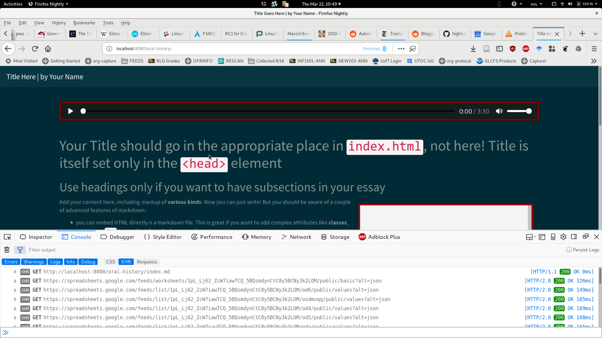

pull in upstream changes so you can play w/ up to date code during class today.
git pull
pop.footnote({
start: 50,
end: 90,
text: "Second Footnote!",
target: "popcorn-container"
});
Line 16 in js/~popcorn-data-from-google.js:
var public_spreadsheet_key = 'https://docs.google.com/spreadsheets/d/1pL_Lj62_ZcW7iawTCQ_5BQsmdynCtC8y5BCNy3k2LOM/pubhtml?gid=0&single=true';
var mytables = Tabletop.init( { key: public_spreadsheet_key,
callback: processInfo ,
simpleSheet: false } );
pull in upstream changes so you can play w/ up to date code during class today.
git pull
Alternative Method
var public_spreadsheet_key = 'https://docs.google.com/spreadsheets/d/1pL_Lj62_ZcW7iawTCQ_5BQsmdynCtC8y5BCNy3k2LOM/pubhtml?gid=0&single=true';
Page-specific code is found in /css/oh-styles.css
.main-container {
grid-template-areas: "intro popcorn" "main main";
grid-auto-columns: 1fr;
grid-template-rows: 50vh 1fr;
}
aside#popcorn-container {
grid-area: popcorn;
background-color: var(--color-highlight2);
border: 1px solid var(--color-custom-borders);
display: flex;
flex-direction: row;
overflow-y: scroll;
overflow-x: hidden;
flex-wrap: wrap;
max-height: 100%;
/* space things out! */
justify-content: space-around;
}
aside#popcorn-container > * {
/* default base width for plugins */
flex-basis: var(--default-width);
flex-shrink: 1;
flex-grow: 1;
}
/* most of the plugins will create divs or other elements w/ class "pluginname-plugin" */
/* here's one example of styling particular plugins differently from others */
#popcorn-container figure.figure-plugin {
/* an example of setting the figure as a bit larger than the others. */
flex-basis: calc(var(--default-width)*4/3);
max-width: 100%;
}
#popcorn-container .leaflet-plugin, #popcorn-container .googlemap-plugin {
/* make these full-width by default */
flex-basis: 100%;
}
/* you can also use the `id` column to address *most* plugins (but not all!) */
Some thoughts
Install npm & run server
cd advanced-topics-yr-name
npm install
npm run server &
Navigate to your site
firefox localhost:8080/oral-history
use DevTools to look for errors 
Error Sources
Good Annotations:
Less Good Annotations:
Seek Function
const seek = function (time) {
document.getElementById("media").currentTime= time;
};
Use in Markdown thus:
When <a href="javascript:seek(75)">Jonathan discusses the trauma of wartime (1:15)</a>,
he uses language that clearly echos that of professional psychiatric discourse as it
came into vogue in the 1970's.
Styling media container in chrome
audio::-webkit-media-controls-enclosure {
background-color: rgba(20,20,20,0.4);
border-radius: 5px;
}
audio {
width: 100%;
}